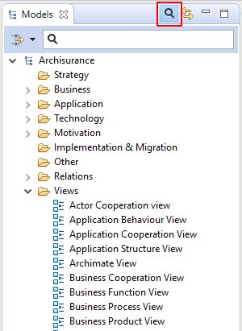
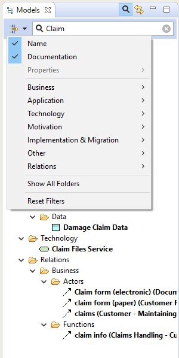
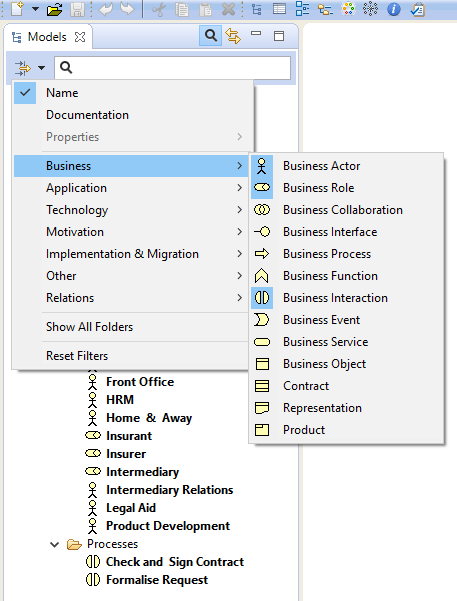
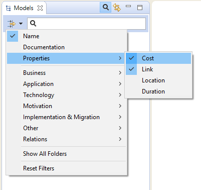

Le nombre d'éléments dans l'arborescence des modèmes peut croître assez considérablement pendant que vous travaillez sur votre modèle. Bien sûr, vous pourriez souhaiter ajouter des sous-répertoires dans la structure de dossiers principale pour vous aider à organiser vos éléments. Cependant, trouver un élément spécifique dans l'arborescence peut s'avérer toujours difficile.
De façon à recherche dans l'arborescence des modèles, une barre de recherche est incluse dans Archi. Celle-ci est accessible en cliquant sur le bouton "Chercher" dans la barre d'outils de la fenêtre de l'arborescence des modèles. Cliquer sur ce bouton fait apparaître la barre de recherche:
La barre de recherche révélée
Au fur et à mesure que vous saisissez du texte dans le champ de la barre de recherche, l'arborescence des modèles se met à jour pour n'afficher que les éléments qui correspondent aux critères de recherche que vous avez saisi dans la barre de recherche. Vous pouvez également chercher des éléments via le champ "Documentation" en le cochant dans le menu déroulant "Options de filtre" dans la barre de recherche:
Recherche simultanée sur le "Nom" et la "Documentation"
Pour annuler la sélection provoquée par le texte de recherche, cliquez sur l'icone à droite du texte. Pour réinitialiser les filtres, désélectionnez "Nom" et/ou "Documentation".
Pour filtrer certains types d'éléments ArchiMate, vous pouvez choisir les différents types à inclure dans le filtre/recherche du menu déroulant:
Filtrage de certains types d'éléments
Pour réinitialiser le filtre des types d'éléments, choisissez l'élément de menu "Réinitialiser les filtres".
Pour filtrer les propriétés de l'utilisateur des éléments, vous pouvez choisir les différentes clefs de propriétés à inclure dans le filtrer/recherche du menu déroulant:
Filtrage des propriétés de l'utlisateur
Au fur et à mesure que vous affinez votre recherche, l'arborescence des modèles n'affiche que les éléments qui correspondent à vos critères de recherche/filtrage (ou n'affiche rien si aucun élément ne correspond). De ce fait, les répertoires ne contenant aucun élément ne correspondant ne sont pas non plus affichés. Cependant, si vous souhaitez afficher ces répertoires vides (vous pourriez vouloir y glisser-déposer des éléments d'autres répertoires, par exemple), vous poyvez définir ceci via une option dans le menu de fitrage en choisissant "Afficher tous les répertoires".
Pour fermer la barre de recherche et réinitialiser le filtre de recherche, appuyez sur le bouton "Recherche" une ou plusieurs fois.
Il est également possible de trouver et de remplacer des éléments dans l'arborescence des modèles via leur nom.

Dialogue trouver et remplacer